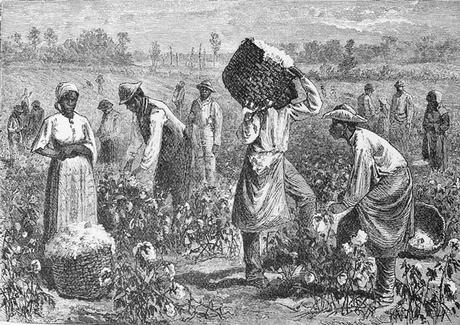
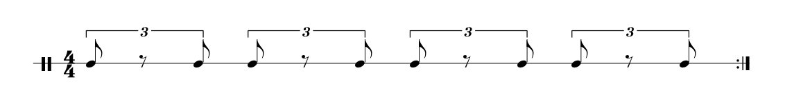
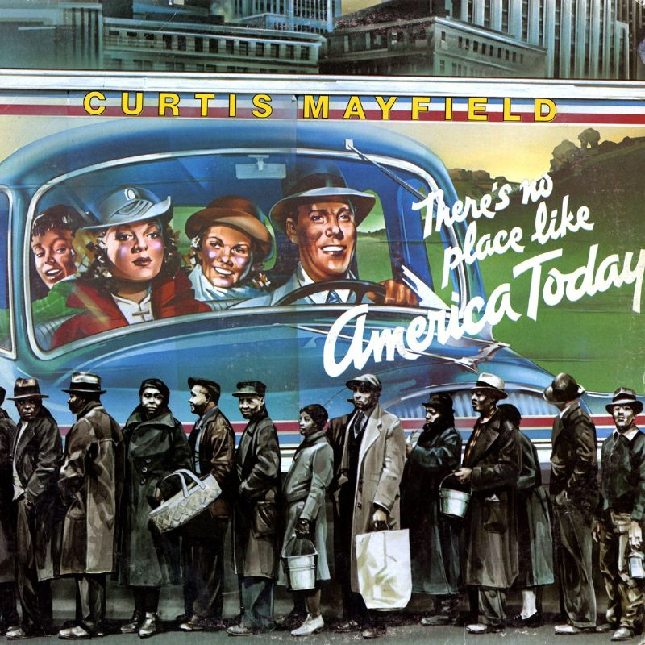
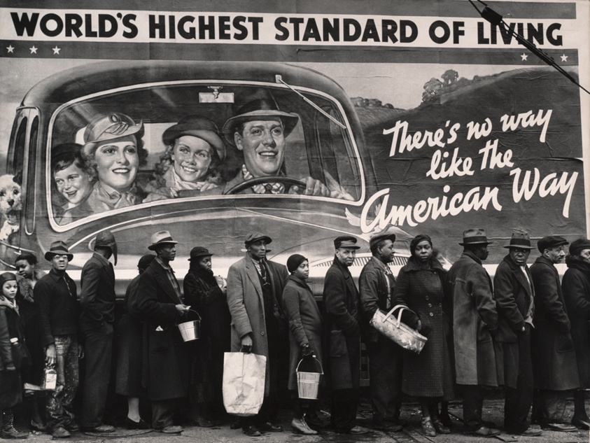

Ce texte est une courte introduction au Blues et à la musique afro-américaine que j'ai écrit en 2022.
À ma famille, à mes amis
When I was a little bitty baby
My mama would rock me in the cradle
In them old cotton fields back home
Leadbelly - 1940

Scène dans une plantation de coton
Au XIXème siècle, dans les États du Sud des Etats-Unis, les esclaves Noirs trouvaient le moyen de rendre leur travail dans les champs de coton moins difficile en le rythmant, en chantant des work-songs et en dansant. Dans ses Notes sur l’Etat de Virginie, le troisième président des Etats-Unis Thomas Jefferson explique que les esclaves jouaient du banjor (ancêtre du banjo) et du fiddle, un violon d’origine irlandaise. Cependant, le Black Code appliqué par les esclavagistes du Sud, limitait les Noirs dans leur possibilités d’expression artistique. Ainsi, d’après le Black Code of Mississippi, l’usage du tambour était interdit dans les plantations car il “[aurait pu] être utilisé comme un moyen de communication pour inciter les esclaves à la révolte”. La société sudiste états-unienne était profondément religieuse et les esclaves avaient été systématiquement évangélisés après que les Blancs aient considéré comme désuet de considérer les Noirs comme des animaux dépourvus d’âme. Les chansons des esclaves étaient donc souvent imprégnées de religion et étaient alors appelées negro-spirituals, dont le sublime titre Sinnerman de la grande pianiste Nina Simone est un exemple.
Dans son livre The Land Where The Blues Began, l’ethnomusicologue américain Alan Lomax, raconte son voyage à travers la campagne du delta du Mississippi pour enregistrer la musique afro-américaine dans les années quarante. Il y décrit ses rencontres avec de grands musiciens de l’époque comme Muddy Waters à la Plantation Sherrod ou Sony House, le père du blues. Il y raconte également sa visite au Pénitencier de Parchman au Mississippi en 1948. Des files de barbelées séparaient la prison du reste du monde. Le Soleil tapait sur les Noirs en costume rayé et les gardiens avaient l’habitude d’humilier, de torturer et d’assassiner des détenus. Alan Lomax compare d’ailleurs ce pénitencier à un camp de concentration Nazi. L’automutilation était un moyen pour les détenus de sortir de l’enfer de la prison et se couper une jambe était monnaie courante. Comme dans les plantations, pour les prisonniers, chanter des musiques africaines en rythme était un moyen d'endurer la fatigue, la douleur et faisait avancer le travail.
La musique noire de l’époque mêlait donc influence africaine et européenne. Lors des travaux agricoles, les Noirs pouvaient chanter et répondre au chant de leurs voisins. L’un d’eux chantait seul, les autres répondaient en chœur. Ces échanges s’appellaient des hollers et ont influencé les motifs musicaux de question/réponse dans les musiques afro-américaine du XXème siècle, notamment dans le blues. On peut entendre de tels échanges dans l’album Negro Prison Songs enregistré dans les années quarante par Alan Lomax. Le blues est une musique acoustique et chantée, influencée par les work-songs des plantations. D’après le travail du musicologue français Gérard Herzhaft (né en 1943), le mot blues était utilisé en Angleterre pour désigner “l’histoire personnelle”. À cette époque, en Amérique, les Noirs avaient une condition sociale dégradante et humiliante et leurs histoires personnelles étaient chantées avec énormément d’émotion. Le terme blues prend alors une autre connotation. Les Noirs chantaient I’ve got the blues, ce qui signifie grossièrement je me sens mal. Il faut cependant comprendre que cette traduction n’est qu’une version édulcorée de la réelle signification. La vie des Noirs aux Etats-Unis était extrêmement violente et misérable et la ségrégation a persisté jusque dans les années soixante. Pour comprendre la signification du mot blues, il faudrait donc être un Noir américain du début du XXème siècle.
L’urbanisation a contribué à l’émergence du musicien de blues. Accompagné d’abord de son violon puis de sa guitare, il jouait sa musique la plupart du temps dans les bars où les autres Noirs lui demandaient de « raconter son blues ». À cette même époque, dans les églises les chœurs de Gospel reprenaient également des éléments de la musique des plantations, ils chantaient des negro-spirituals. Une distinction était faite entre le Gospel et le blues. Le blues n’était pas accepté par les Noirs croyants qui chantaient le Gospel. Cela a contribué à un certain folklore autour de cette musique. Le blues était considéré comme la « musique du diable ». Robert Johnson (1911-1938), l’un des plus grands artistes de ce mouvement musical, s’amusait à raconter que Satan lui avait appris la guitare.
Le développement de l’enregistrement sonore entraînant la commercialisation des gramophones apparus à la toute fin du XIXème siècle, a permis la naissance de l’industrie musicale. La création des race records souvent fondées par des Juifs a permis au blues de se diffuser en Amérique. Un lien existait entre les communautés juive et noire. La population juive était l’une des plus pauvres d’Europe. Ainsi en arrivant aux Etats-Unis, les migrants juifs vivaient dans des ghettos et avaient une situation similaire à celle des Noirs : ils subissaient la discrimination et l’antisemitisme des white anglo saxon protestants américains. De nombreux labels dont les dirigeants étaient juifs enregistraient donc la musique noire comme le label Chess Records fondé par Leonard et Phil Chess. La création et l’histoire de ce label est assez bien mise en scène dans Cadillac Records sorti en 2008. Ils ont notamment enregistré les excellents artistes Howlin’ Wolf (1910-1976), Muddy Waters (1913-1983) et Etta James (1938-2012) dont le rôle est interprété par Beyoncé dans le film.
La région du delta du Mississippi est le lieu de naissance du blues. Cependant, d’autres lieux liés à ce courant musical sont importants. On peut citer notamment la ville de Chicago et sa musique électrique, le Texas et ses influences hispaniques comme chez les musiciens du groupe Z.Z. Top, ainsi que la Nouvelle-Orléans avec l’apparition du ragtime et du Jazz. Une évolution notable du blues est le Rythm’N’Blues, développé dans les zones urbaines comme Chicago, Detroit et New-York dans les années quarante.
Je présente ici succintement les vies de Blind Willie Johnson et de Nina Simone. Leurs histoires permettent de mieux comprendre le blues et la vie des musiciens et chanteurs de blues.
Blind Willie Johnson est le stéréotype du bluesmen. Né probablement en 1900, il a obtenu sa première guitare à l’âge de cinq ans : une guitare faite maison à partir d’une boîte à cigare appelée cigar-box. Sa belle-mère lui a ôté la vision à l’âge de sept ans en l’aspergeant de lessive à la suite d’une dispute entre elle et son père. On retrouve l’un de ses enregistrements Dark Was The Night, Cold Was The Ground au côté de Jean Sébastien Bach, de Beethoven et de Chuck Berry sur le Voyager Golden Records : un disque confectionné pour la sonde Voyager I destinée à l’exploration spatiale lancée en 1977.
Nina Simone est née en 1933 en Caroline du Nord. Adolescente, elle voulait jouer autre chose que la musique du dimanche. Cependant, sa mère ne voulait pas qu’elle joue de la musique populaire. En cachette avec son père, elle apprenait donc à jouer la musique qu’elle entendait dans le voisinage. Ses parents trouvent le moyen de lui offrir des cours de piano classique. Nina apprend très vite le piano, à lire les partitions et la théorie musicale.
Lors d’un récital, alors que Nina Simone ferme les yeux et se concentre, elle sent une tension. Ses parents cèdent leur place au premier rang à un couple de Blancs. Nina Simone conteste et obtient gain de cause. Cet incident est le premier à ouvrir sa conscience au racisme et à la ségrégation. Son deuxième choc est la lettre de refus du Curtis Institute auquel elle avait auditionné pour devenir pianiste classique. Ses rêves s’effondrent et elle comprend que sa couleur de peau est la raison pour laquelle elle a été refusée. Elle est donc contrainte à jouer la musique du diable : le blues. Elle interprète ses morceaux au Midtown Bar & Grill à Atlantic City pour gagner de l’argent. Nina Simone commence ainsi sa carrière de pianiste et chanteuse puis enregistre son premier album et compose son incroyable Good Bait, dans lequel elle mélange ses influences de musique classique, jazz et blues.
The sound that you're listening to
Is from my guitar that's named Lucille
I'm very crazy about Lucille
Lucille took me from the plantation
B.B. King - 1968
Même si le blues est à l’origine joué avec une guitare acoustique folk à laquelle la voix se superpose, l’avènement des instruments électriques a permis l’émergence de nouvelles formations. Les instruments principaux du blues sont le piano, la contrebasse ou la basse électrique, les guitares rythmique et lead, la batterie, l’harmonica et la voix. Dans le blues à plusieurs instruments, une place importante est laissée à l’improvisation. Les instrumentistes blues se questionnent et se répondent comme dans les hollers. Dans le tube Boom Boom du bluesman John Lee Hooker (1917-2001), on peut par exemple entendre les accords plaqués au piano et la voix répondre aux phrases bien senties de la guitare lead. Les chanteurs de blues n’ont pas de grande technicité vocale comme les chanteurs de gospel mais des voix rauques de crooner. Big Mama Thornton dans Hound Dog. Certains chanteurs ont des voix exceptionnelles comme Nina Simone ou B.B. King.
L’amplification puis l’électrification des instruments dans les années trente et quarante a fait évoluer la manière de jouer des musiciens de blues et a donné un second souffle à ce style musical. Cela marque une rupture, les musiciens ne jouaient alors plus le blues comme ils le faisaient au début du siècle. L’amplification des instruments permet aux guitaristes de se faire entendre et la guitare devient l’instrument principal du blues. En effet, une guitare acoustique ne pouvait pas concurrencer en intensité sonore un piano, une batterie, une contrebasse ou des cuivres. Les guitares électriques sont également dotées de cordes plus souples que sur des guitares acoustiques folk, ce qui permettait aux bluesman de faire des bends (to bend signifie plier ou tordre en anglais), des pull off, hammer on et des tremolos. Le bend consiste à tordre la corde pour obtenir une note plus aiguë. Un tremolo consiste à faire osciller la corde pour obtenir davantage de sustain. Les pulls off et hammer on permettent de modifier rapidement la hauteur d’une note.
Des virtuoses comme T-Bone Walker ou B.B. King ont donné ses lettres de noblesse à la guitare électrique. B.B. King avait une approche très originale : il jouait de la guitare comme il chantait ce qui donnait des placements rythmiques nouveaux. Les guitaristes de 8blues sont très attachés à leur instrument. Dans son morceau Lucille, B.B King explique pourquoi il a choisi de donner ce nom à son instrument. Lors d’une soirée où il joue dans un club en Arkansas, une bagarre se déclenche entre deux hommes qui se disputent une femme nommée Lucille. Lors de la bagarre, un réservoir à gaz tombe sur le sol et le bar prend feu. B.B. King explique dans son morceau qu’il a frôlé la mort en sauvant sa guitare des flammes.
Une technique de guitare utilisée sur de nombreux morceaux de blues est le slide produit avec un bottleneck. Le bottleneck est un cylindre creux en métal ou en verre qu’on enfile autour de l’annulaire ou de l’auriculaire et que l’on fait glisser sur les cordes de l’instrument. Généralement les bluesmen récupéraient un goulot de bouteille en verre. Le son ainsi produit est métallique et les notes jouées durent plus longtemps. On peut l’entendre sur les titres I Can’t Be Satisfied de Muddy Waters, Dark Was The Night, Cold Was The Ground dont j’ai parlé plus haut ou encore dans Paris, Texas de Ry Cooder qui a composé la musique du film du même nom. On peut parfois remarquer l'entremêlement de la guitare slide et de l’harmonica sur les morceaux de blues.
Le rythme en musique est la façon de disposer les notes dans le temps. Dans le blues, le temps est divisé en trois, comme dans la valse. Le motif rythmique utilisé s’appelle le shuffle : on joue le premier et le troisième triolet du temps ce qui donne un effet de saccade, un rythme chaloupé. Des accents sont posés au deuxième et quatrième temps.

Représentation théorique du shuffle
Ce rythme imite le grondement et le sifflement des trains à vapeur (Hear My Train A Comin' de Jimi Hendrix) circulant sur les rails, il peut aussi rappeler le balancement des rocking chairs et le ballottement des berceaux (Cotton Fields de Leadbelly). Ce rythme a également une connotation sexuelle. De nombreux morceaux ont d’ailleurs des double sens. ou font explicitement référence à l’acte sexuel (Back Door Man de Willie Dixon, I Want A Little Sugar In My Bowl de Nina Simone, I’m Your Hoochie Coochie Man de Muddy Waters). Des compositions de blues utilisent également le stop-time qui consiste à marquer des silences entre des lignes mélodiques comme dans les morceaux Mannish Boy, Baby Please Don’t Go ou Boom Boom.
La grille d’accords la plus classique du blues est le twelve bar blues. Il s’agit d’une grille en douze mesures où l’on entend trois accords : le premier degré, le quatrième degré et le cinquième degré. L'enchaînement du cinquième degré puis du premier amène la résolution, il s’agit d’une cadence parfaite. Pendant les quatre dernières mesures vient le turnaround : un motif mélodique sur lequel les musiciens s’accordent qui vient amener la tension puis la résolution. Dans la plupart des blues traditionnels, les accords sont joués en majeur, cependant certains blues qui se rapprochent de la soul se jouent avec des accords mineurs comme dans The Thrill Is Gone de B.B. King. Les accords joués sont des accords “de septième” composés de la fondamentale, de la quinte juste, de la tierce majeure et de la septième mineure. L’intervalle, c’est à dire l’écart entre deux notes, composé de la tierce et de la septième est appelé le triton. Il était considéré comme l’intervalle du diable pendant le Moyen-Âge à cause de sa dissonance.
Les mélodies sont composées à l’aide de la gamme pentatonique mineure à laquelle vient s’ajouter la blue note : la quarte augmentée. La gamme pentatonique possède cinq notes et est largement utilisée en musique pop et que l’on a entendue dans des cultures de tous les continents. Dans la tonalité de Mi elle est constituée des notes Mi, Sol, La, Si et Ré. Une tonalité majeure et une mélodie mineure. Le blues joue sur l'ambiguïté majeur/mineur et crée des tensions à partir de cette ambiguïté. Il est intéressant de noter que la musique country qui apparaît à la même époque que le blues, jouée par les Blancs est composée à l’aide de la gamme pentatonique majeure qui est plus joyeuse. Cette gamme est constituée de la fondamentale, de la seconde, de la tierce majeure, de la quinte juste et de la sixte majeure.
Bien que ces aspects théoriques soient récurrents dans les compositions de blues, il n’y a pas une unique manière de jouer cette musique. Certains morceaux reposent sur un seul accord, parfois sur deux ou trois notes et certains blues sont joués en binaire. B.B. King et d’autres utilisent la gamme pentatonique majeure sur certains accords. En somme, il n’y a pas de règle si ce n’est la répétition. Cette musique est répétitive, presque primitive et tribale et a été partiellement influencée par les rites amérindiens notamment cherokee. Lors de jams, les musiciens de blues peuvent atteindre un état de transe comme le décrit Alan Lomax lors de sa rencontre avec Son House. Les bluesmen n’avaient aucune connaissance de théorie musicale. Cependant, ils étaient d’excellents musiciens avec de bonnes oreilles et un sens du rythme remarquable.
Mary had a little lamb
Its fleece was white as snow yeah
Everywhere the child went
The little lamb was sure to go yeah
Buddy Guy - 1968
Les paroles des chansons de blues racontent avant tout l’histoire du musicien. Les thèmes principaux sont le sexe, l’esclavage (parfois sans qu’il n’y ait de référence explicite) et la misère. L’interprétation par Bessie Smith de Nobody Knows You When You’re Down and Out prend tout son sens quand l’on sait que l’artiste a connu la gloire dans les années vingt puis la misère et l’oubli suite à la Grande Dépression de 1929. Albert King lui, chante son sentiment de douleur et de malchance dans Born Under A Bad Sign.
Les paroles de blues utilisent des mots d’argot afro-américain, un vocabulaire particulier plein de sous-entendus et un langage familier voire vulgaire. Énormément de morceaux parlent de sexe plus ou moins excplicitement : Back Door Man de Willie Dixon, I’m Your Hoochie Coochie Man et I’m a King Bee de Muddy Waters. L’expression back door man faisant référence à un homme ayant une relation avec une femme mariée, qui s’enfuit par la porte de derrière pour ne pas se faire prendre par le mari. Dans I’m A King Bee de Muddy Waters on l’entend chanter “Well, I'm a king bee, buzzin' around your hive / Well, I can make honey, baby, let me come inside”. Les paroles sont assez explicites, le miel (honey) faisant référence au sperme et la ruche (hive) au vagin. Les femmes racontent également leurs désirs et pulsions comme Florence Stamp dans le morceau Satisfied ou I Want A Little Sugar In My Bowl de Nina Simone qui est une reprise de la chanson I Need A Little Sugar In My Bowl de Bessie Smith. La différence est que Nina Simone ne cherche pas à être réconforter, elle cherche le plaisir sexuel. Toutes ces références cachées ou non n’étaient pas du goût des hommes et femmes de religion qui appelaient le blues la musique du diable.
Le blues étant une musique populaire, les chanteurs avaient l’habitude de reprendre des airs à la mode. Certaines paroles de blues sont parfois issues de comptines populaires comme Mary Had A Little Lamb datant du XIXème siècle et mise en musique par Buddy Guy en 1968. La chanson raconte l’histoire d’une enfant qui ramène son agneau à l’école, ce qui n’est pas du goût du professeur mais qui amuse la galerie.
He roller coaster
He got early warning
He got muddy water
He one mojo filter
He say, "one and one and one is three"
Got to be good looking 'cause he's so hard to see
John Lennon - 1969
Le blues est une musique fondamentale. Elle est à l’origine de la musique populaire occidentale. On peut voir des liens évident avec le rock’n’roll, le rythm’n’blues et le jazz des moins évident avec le funk et la soul, et n’en voir a priori aucun avec le rap.
D’après B.B. King, le rock’n’roll est né quand les Blancs se sont mis à jouer du blues. Il s’agit donc de la même musique mais jouée par des Blancs. L’idée est venue de Sam Phillips qui a enregistré Elvis Presley en 1953 pour vendre des disques. En effet, le blues était une musique jouée par les Noirs et écoutée par les Noirs. Phillips voulait élargir son audience et il fallait faire en sorte que les Blancs soient prêts à acheter ses disques. Cependant, la séparation entre rock et blues n’est pas réellement une différence de couleur de peau entre musiciens de blues et musiciens de rock. En rock, on oublie le ternaire du blues et on le remplace par le binaire. On augmente également le tempo. On garde cependant la grille d’accord twelve bar blues. De nombreux artistes Noirs se sont mis au rock dans les années cinquante : Little Richard, Chuck Berry. Ils abandonnent la posture du bluesmen, celle d’un Noir pauvre, esclave de son patron blanc et malchanceux. Ils sont désormais des hommes d’affaires ou des stars. À la fin des années soixante, Jimi Hendrix, l’un des plus grands guitaristes et musicien du XXème siècle a révolutionné la guitare blues en mélangeant blues, rock psychédélique et funk.
Outre Atlantique, les plus grands groupes de rock de l’histoire, les Beatles et Rolling Stones, commencent leur carrière musicale en reprenant des chansons de musique afro-américaine au début des années soixante. Ils jouent des reprises de Muddy Waters, de 13Robert Johnson et de Chuck Berry. Les Rolling Stones ont d’ailleurs eu l’occasion de jouer avec leur idole Muddy Waters lors d’une tournée aux Etats-Unis. Le nom Rolling Stones vient de l’un des vers de Muddy Waters I’m a rolling stone. Les groupes de rocks britanniques ont ainsi participé à la diffusion et à la reconnaissance du blues dans le monde. Des musiciens de rock plus contemporains comme The Black Keys, John Mayer et Gary Clark Jr. ont également été inspirés directement par le blues. Ils contribuent aujourd’hui à faire vivre cette musique et à la transmettre.
La Soul et le Funk viennent d’une évolution de la musique noire américaine. La Soul est née dans les années soixante. L’orchestration y est plus sophistiquée que dans le blues. On y retrouve des pianos, des violons, des altos, des violoncelles, une batterie lente qui bat un rythme ternaire, des guitares rythmiques qui plaquent les accords comme dans It’s A Man’s Man’s Man’s World de James Brown, At Last de Etta James ou dans des classiques de B.B. King. Marvin Gaye avec son album What’s Going On, grave l’une des pierres angulaires de la soul music. Le label Motown est le label emblématique de cette musique et de cette période. Il a par exemple produit Marvin Gaye, Michael Jackson, Stevie Wonder, The Supremes, Diana Ross et The Temptations. La Soul est une musique qui parle de la vie
James Brown a vécu dans une famille extrêmement pauvre en Caroline du Nord. Surnommé le parrain de la soul, il crée une nouvelle musique dans les années soixante-dix : le Funk avec son titre Papa’s Got A Brand New Bag dont la structure est celle d’un standard de blues. Le funk est une musique festive et pleine de revendication des noirs américains. Il s’agit de la recherche de la transe et de la danse ainsi que de la fierté noire. James Brown chante d’ailleurs I’m Black And I’m Proud en 1968. Le mot vient de l’argot afro-américain : funk, funky viendraient du langage kikongo parlé en Angola ou au Congo. Il s’agit de l’odeur forte mais enivrante de la sueur. Les Noirs décident de se réapproprier l'expression “puant de sueur”, insulte récurrente des White Anglosaxons protestant (wasp) faites au Noirs. Le bit, le groove avant tout, la danse avant tout. Le funk est une musique urbaine et non plus rurale comme l’était le blues. Le groove en Funk remplace le shuffle du blues, le temps est désormais divisé en quatre et non plus en trois. On y trouve des rythmiques endiablées, des guitares acides dopées à l’effet wah-wah qui imite la sourdine des cuivres, superposées à une batterie syncopée et une basse puissante. Le funk fait peur aux blancs américains tout comme le radicalisme des Black Panthers. C’est une musique qui vient de la rue, des ghettos noirs. À Watts, quartier de Los Angeles dont la population est à 99% noire dans les années soixante, beaucoup de manifestations éclatent. Lors des Jeux Olympiques d’été de 1968, Tommie Smith et John Carlos, vainqueurs de l’épreuve du 200 mètres et afro-américains, décident de lever leurs poings pour contester la discrimination faites aux Noirs. Les assassinats des figures emblématiques du mouvement des droits civiques Malcolm X et Martin Luther King en 1965 et 1968 provoquent des émeutes dans le pays. L’Amérique est sous tension. Le funk arrive à la suite du mouvement des droits civiques. A l’époque, de nombreuses contestations ont lieu pour s’opposer à la guerre au Vietnam. Une guerre dans laquelle les afro-américains n’ont strictement rien à gagner à brûler la forêt tropicale au nappalme. Les chanteurs de funk et de soul The Temptations et Edwin Starr contestent en chantant respectivement War et Stop The War Now.
Dans les années soixante-dix une contre-culture afro-américaine associée à la funk et liée au mouvement des Black Panthers émerge, celle de la blaxploitation. Le premier film considéré comme un film de blaxploitation est Sweet Sweetback badass song du réalisateur Melvin Van Peebles. Le film a notamment été classé X en raison de scènes de sexe explicite ce qui a conduit Van Peebles a rajouté dans le générique Rated X by an All White Jury. La bande originale de Sweet SweetBack a été composée par Earth, Wind and Fire groupe de funk mondialement connu pour le titre September. Le film Shaft est le premier à mettre en scène un policier Noir. Pour la première fois au cinéma, le personnage principal a la peau noire. Le terme blaxploitation est un mot valise constitué des mots black et exploitation. Il désigne un mouvement culturel contestataire afro-américain né dans les années soixante-dix. La bande originale de Shaft est composée par le musicien de soul et funk Isaac Hayes. Superfly dont la bande son a été composée par le musicien de génie Curtis Mayfield fait également parti de cette mouvance. Le superbe film Car Wash tend un miroir aux afro-américains en leur montrant leur façon de vivre et leur culture.

There's No Place Like America Today
Sur l’album There’s No Place Like America Today de Curtis Mayfield, on observe un panneau publicitaire sur lequel une famille blanche issue de la classe moyenne se promène en voiture. Devant ce panneau, il y a des Noirs dans une file d’attente, victimes d’inondations pendant la grande dépression. Il s’agit d’un montage dont la photo d’origine a été prise par Margaret Bourke-White, publiée dans le magazine Life en février 1937 et titrée World’s Highest Standard of Living. Le titre grinçant de l’album fait référence au slogan du panneau publicitaire de la photo : “There’s no way like the american way”.

World’s Highest Standard of Living
Le Rap est apparu à la fin des années soixante-dix, dans les quartiers populaires afro-américains. Cette musique urbaine était initialement une musique festive tout comme le funk et en reprend d’ailleurs les principaux codes. Par exemple, dans son album Doggystyle, Snoop Dogg choisit de mettre en avant les lignes de basse. Les revendications politiques des Afro-Américains dans le rap sont également très présentes. Le chanteur Gil Scott-Heron établit un pont entre le blues et le rap avec sa reprise Me And The Devil Blues en 2010. Gil Scott-Heron est mort en 2011 à l’âge de 62 ans. Les musiques de rap sont répétitives. Il s’agit la plupart du temps de samples qui tournent en boucle et on peut faire le parallèle avec le blues, qui est une musique répétitive par essence puisqu’elle est directement liée à l’héritage africain des bluesmen et blueswomen.
Les Touaregs constituent un peuple berbère nomade peuplant le Sahara central. Le blues touareg est la musique des ishumars (les jeunes en touareg, le terme vient du mot français "chômeur"), c’est-à-dire la génération ayant connu la sécheresse et la répression de l’armée Malienne dans les années soixante. Cette musique est influencée par le blues et la musique occidentale du XXème siècle. On y trouve des guitares et basses électriques et des percussions traditionnelles. Le groupe Tinariwen a connu récemment un certain succès en Europe. Il s’agit d’une institution transgénérationnelle. On y retrouve des musiciens jeunes et plus âgés. Ce style musical a contribué à développer un usage nouveau des instruments électriques. Les guitares présentes sur ces enregistrements jouent des lignes mélodiques orientales et psychédéliques avec un usage prépondérant du bourdon comme dans les musiques indiennes.
Le blues est maintenant une musique centenaire. Il s’agit d’un style fondamental qui a énormément influencé la musique occidentale du XXème siècle et qui permet de mieux la comprendre. Le blues est à l’origine de toutes les musiques afro-américaines, et à l’intersection de tous ces genres musicaux se trouvent la lutte des Noirs américains pour leurs droits et contre l’esclavage. Le Sénat Américain a proclamé 2003 l’année du blues. Cette même année, le réalisateur Martin Scorcese a sorti une série de documentaires sur le blues intitulée Martin Scorsese Presents… The Blues. On y retrouve des films réalisés par Scorsese, Wim Wenders et Clint Eastwood. Le blues est maintenant reconnu mondialement (la comédie musicale The Blues Brothers est un classique de la pop culture) mais il faut se souvenir que les musiciens de blues ont été ostracisés au début du XXème siècle : par les Blancs parce qu’ils étaient Noirs et par les religieux parce qu’ils jouaient « la musique du diable ». Il est également important de noter que la reconnaissance du blues par l’Amérique blanche est arrivée par les reprises de musiciens blancs de standard de blues. Même si le blues est maintenant une musique reconnue, elle ne touche plus grand monde et fait avant tout partie d’un bagage culturel des musiciens contemporains et concerne une niche de passionnés. L’un des objectifs modeste de ce texte est de contribuer à ce que l’on s’en souvienne.
Nina Simone, l’art de la fougue
Aux sources du funk : la sueur, les larmes et le groove de l’Amérique noire
Musiques à lire: Aux racines du blues
Voici une petite discographie non exhaustive de quatre disques de blues et un disque de funk.
-BB King, Live at the regal
-Robert Johnson, King of the delta blues
-Big Mama Thorton, Hound Dog
-Nina Simone, Pastel Blues
-Curtis Mayfield, There Is No Place Like America Today
-Le Blues de Gérard Herzhaft (une référence avec un soin apporté aux détails socio-historiques, je me suis largement appuyé sur ce livre pour écrire le chapitre sur l’origine du blues)
-Love in vain de Mezzo et J.M. Dupont (une bande dessinée réaliste qui dépeint la vie de Robert Johnson)
-The Land Where The Blues Began de Alan Lomax
-Art Institute of Chicago
-New York Public Library, digital collections